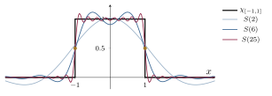
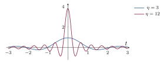
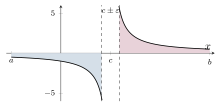

Sea f una función absolutamente integrable en R. Escribamos para f una integral correspondiente, en cierto sentido, a la serie de Fourier, en la que la sumación según el índice n se ha sustituido por la integración respecto a cierto parámetro: ∫0+∞(a(y)cosxy+b(y)senxy)dy,a(y)=π1∫−∞∞f(t)cosytdt,b(y)=π1∫−∞∞f(t)senytdt. Estas integrales convergen absolutamente para todo y, pues ∣f(t)cosyt∣≤∣f(t)∣ y ∣f(t)senyt∣≤∣f(t)∣; más aún, por el criterio de Weierstrass convergen uniformemente en y∈R, y a, b son continuas y acotadas: ∣a(y)∣,∣b(y)∣≤π1∫∣f∣.
La integral ∫0+∞(a(y)cosxy+b(y)senxy)dy se llama integral de Fourier de la función f.
Es el análogo continuo de la serie de Fourier: las frecuencias enteras n se sustituyen por un parámetro continuo y≥0, y los coeficientes an,bn por las funciones a(y),b(y). Sustituyendo a y b: ∫0+∞(a(y)cosxy+b(y)senxy)dy=π1∫0+∞(∫−∞+∞f(t)costycosxydt+∫−∞+∞f(t)sentysenxydt)dy=π1∫0+∞(∫−∞+∞f(t)(costycosxy+sentysenxy)dt)dy=π1∫0+∞(∫−∞+∞f(t)cosy(x−t)dt)dy. Por el criterio de Weierstrass, ∫−∞+∞f(t)cosy(x−t)dt converge uniformemente para −∞<y<∞, dado que ∣f(t)cosy(x−t)∣≤∣f(t)∣ y f es absolutamente integrable sobre R. En particular, la función y↦∫f(t)cosy(x−t)dt es continua. Así, ∫0+∞(a(y)cosxy+b(y)senxy)dy=π1∫0+∞dy∫−∞+∞f(t)cosy(x−t)dt. Haciendo analogía con la suma de una serie de Fourier de una función, que es igual, en ciertas condiciones, a la misma función, la integral de Fourier representa también la función de partida.
Sea g(x) una función absolutamente integrable en [a,+∞). Entonces η→+∞lim∫a+∞g(t)cosηtdt=0,η→+∞lim∫a+∞g(t)senηtdt=0.
Demostraciónmostrar
Es un caso particular del Teorema 9.13, que vale para cualquier intervalo (a,b), finito o infinito, y para un parámetro real ν→∞: la aproximación de g en media por funciones escalonadas finitas φ con ∫∣g−φ∣<2ε y el cálculo explícito ∫ξηsenνtdt≤ν2 no usan que ν sea entero.
Para todo η>0, ∫0+∞tsenηtdt=2π, y A→+∞lim∫A+∞usenudu=0.
Demostraciónmostrar
Con u=ηt, ∫0∞tsenηtdt=∫0∞usenudu, que converge (criterio de Dirichlet, Ejemplo 3.20) y vale 2π (Problema 13.1). La segunda afirmación es la convergencia de ∫0∞usenudu (criterio de Cauchy).
la función f es continua a trozos en cada segmento finito y absolutamente integrable en R;
en el punto x existen f+′(x) y f−′(x) (derivadas laterales generalizadas, como en el Capítulo 9).
Entonces para x se verifica 2f(x+0)+f(x−0)=π1∫0+∞dy∫−∞+∞f(t)cosy(x−t)dt.

Integrales de Fourier truncadas S(η)(x)=π1∫0ηdy∫−11cosy(x−t)dt del pulso χ[−1,1]: al crecer η se acercan a la función, y en los saltos x=±1 valen el promedio 21. Como en las series, aparece el fenómeno de Gibbs.
Demostraciónmostrar
Sea S(η)=π1∫0ηdy∫−∞+∞f(t)cosy(x−t)dt, con η>0 y x un punto fijo tal que existen f−′(x) y f+′(x). Claramente limη→+∞S(η)=π1∫0+∞dy∫−∞+∞f(t)cosy(x−t)dt; es decir, S(η) es un análogo de las sumas parciales de las series de Fourier. Para todo ξ>0 se tiene ∫0ηdy∫−ξξf(t)cosy(x−t)dt=∫−ξξf(t)dt∫0ηcosy(x−t)dy=∫−ξξf(t)x−tsenη(x−t)dt,(11.1) donde el cambio de orden es legítimo porque la integración es sobre el rectángulo acotado [0,η]×[−ξ,ξ] y el integrando es integrable (continuo a trozos en t, continuo en y; Teorema 7.9), y x−tsenη(x−t) se interpreta como η en t=x. Dado que f(t) es continua a trozos y ∣f(t)cosy(x−t)∣≤∣f(t)∣, F(y)=∫−∞+∞f(t)cosy(x−t)dt converge uniformemente en [0,η] respecto al parámetro y; es decir, F(y,ξ)=∫−ξξf(t)cosy(x−t)dt tiende a F(y) cuando ξ→+∞ uniformemente en [0,η]. Así, la función F(y,ξ) es continua respecto a y. Por tanto, en (11.1) se puede pasar al límite bajo el signo de la integral para ξ→+∞ (el lado izquierdo tiende a ∫0ηF(y)dy por la convergencia uniforme; el derecho tiende a la integral impropia, que por tanto converge); entonces S(η)=π1∫−∞+∞f(t)x−tsenη(x−t)dt. Esta integral es finita; es igual a π1∫0ηF(y)dy. La integral S(η) es un análogo de la integral de Dirichlet para series de Fourier. Sea u=t−x y separemos u>0 y u<0; entonces S(η)=π1∫0+∞(f(x+t)+f(x−t))tsenηtdt. Para η>0, ∫0+∞tsenηtdt=2π (Lema 11.3), así que S(η)−2f(x+0)+f(x−0)=π1∫0+∞(f(x+t)+f(x−t))tsenηtdt−(f(x+0)+f(x−0))π1∫0+∞tsenηtdt=π1∫0+∞tf(x+t)−f(x+0)senηtdt+π1∫0+∞tf(x−t)−f(x−0)senηtdt. Estudiemos la primera integral dividiéndola en ∫0+∞=∫01+∫1+∞.
En [0,1]: como limt→+0tf(x+t)−f(x+0)=f+′(x), la función tf(x+t)−f(x+0) es continua a trozos en la variable t en [0,1] (acotada cerca de 0 y continua a trozos en el resto); por el Teorema de Riemann–Lebesgue, limη→+∞∫01tf(x+t)−f(x+0)senηtdt=0.
En [1,∞): la función tf(x+t) es continua a trozos y tf(x+t)≤∣f(x+t)∣ para t≥1. Se sigue que ∫1+∞tf(x+t)dt≤∫1+∞∣f(x+t)∣dt=∫x+1+∞∣f(s)∣ds≤∫−∞+∞∣f(s)∣ds<∞. Es decir, tf(x+t) es absolutamente integrable y por tanto, por el Lema de Riemann–Lebesgue, limη→+∞∫1+∞tf(x+t)senηtdt=0, y η→+∞lim∫1+∞tf(x+0)senηtdt=f(x+0)η→+∞lim∫η+∞usenudu=0, dado que ∫0+∞xsenxdx<∞ (Lema 11.3). Por tanto η→+∞limπ1∫0+∞tf(x+t)−f(x+0)senηtdt=0; de modo análogo, limη→+∞π1∫0+∞tf(x−t)−f(x−0)senηtdt=0. Por tanto, η→+∞limS(η)=2f(x+0)+f(x−0).

El núcleo πtsenηt (análogo continuo del núcleo de Dirichlet): pico de altura πη en 0, oscilaciones cada vez más rápidas, y ∫−∞∞πtsenηtdt=1 para todo η>0.
Condición suficiente para que la integral de Fourier de una función f∈L1(R) (continua a trozos en cada segmento finito) converja a S0=2f(x+0)+f(x−0),x∈R, es que ∫0δt∣φ(t)∣dt<∞para alguˊn δ>0,donde φ(t)=f(x+t)+f(x−t)−2S0.
Demostraciónmostrar
Supongamos que ∫0δt∣φ(t)∣dt converge para algún δ>0 (podemos suponer δ<1). Escribimos x0=x y J(A)=π1∫−∞+∞f(x0+t)tsenAtdt=π1∫0+∞(f(x0+t)+f(x0−t))tsenAtdt, que es S(A) de la demostración anterior. Entonces J(A)−S0=π1∫0+∞tφ(t)senAtdt. Esta integral la podemos partir como ∫0+∞=∫0δ+∫δ1+∫1+∞.
(1) Probemos que ∫1+∞→0 cuando A→+∞: ∫1+∞tφ(t)senAtdt=∫1+∞tf(x0+t)−f(x0+0)senAtdt+∫1+∞tf(x0−t)−f(x0−0)senAtdt. Note que tf(x0+t)≤∣f(x0+t)∣; entonces tf(x0+t) es absolutamente integrable en [1,∞) y limA→+∞∫1+∞tf(x0+t)senAtdt=0 (Lema 11.2); y además A→+∞lim∫1+∞tf(x0+0)senAtdt=f(x0+0)A→+∞lim∫A+∞usenudu=0. Por tanto el primer sumando tiende a 0; similarmente el segundo.
(2) ∫0δtφ(t)senAtdt→0 cuando A→+∞: se sigue por el Lema de Riemann–Lebesgue, dado que ∫0δt∣φ(t)∣dt<∞.
(3) Finalmente, probemos ∫δ1tφ(t)senAtdt→0. Como antes, ∫δ1tφ(t)senAtdt=∫δ1tf(x0+t)−f(x0+0)senAtdt+∫δ1tf(x0−t)−f(x0−0)senAtdt; basta justificar que el primero tiende a 0 cuando A→+∞; el otro término se justifica análogamente. Se tiene ∫δ1tf(x0+t)−f(x0+0)senAtdt=∫δ1tf(x0+t)senAtdt−∫δ1tf(x0+0)senAtdt. (i) ∫δ1tf(x0+0)senAtdt=f(x0+0)∫δAAusenudu→0 cuando A→+∞ (criterio de Cauchy para ∫0∞usenu, pues δA→∞).
(ii) Note que f(x0+t) es absolutamente integrable en (δ,1); además g(t)=t1 es monótona y acotada en [δ,1]. Por tanto tf(x0+t) es absolutamente integrable en (δ,1), y entonces ∫δ1tf(x0+t)senAtdt→0 cuando A→+∞, por el Lema de Riemann–Lebesgue. Entonces limA→+∞J(A)=S0.
El Teorema 11.4 es un caso particular del criterio de Dini: si existen f±′(x), entonces tφ(t)→f+′(x)−f−′(x) cuando t→0+, luego tφ(t) es acotada cerca de 0 y ∫0δt∣φ(t)∣dt<∞. Así, por ejemplo, toda función de L1(R) continua y derivable a trozos (en cada segmento finito) se representa por su integral de Fourier en todo punto.
InteractivoLa integral de Fourier del pulso
Aumenta η: S(η) se acerca al pulso y en ±1 vale ½.
11.2 Diferentes formas de notación de la fórmula de Fourier
Consideremos f∈L1(R) y continua en cada punto de R, con derivadas unilaterales. Para todo x∈R tenemos f(x)=π1∫0+∞dy∫−∞+∞f(t)cosy(x−t)dt, y como la subintegral es par respecto a y, entonces f(x)=2π1∫−∞+∞dy∫−∞+∞f(t)cosy(x−t)dt. (Aquí la integral exterior sobre R converge, pues es el doble de la integral sobre (0,∞), que converge por el Teorema 11.4.) Además, ∣f(t)seny(x−t)∣≤∣f(t)∣; así ∫−∞+∞f(t)seny(x−t)dt converge uniformemente, por el criterio de Weierstrass, para y∈R, y por tanto es una función continua de y. Entonces para todo η existe ∫−ηηdy∫−∞+∞f(t)seny(x−t)dt, y es nula, dado que la función subintegral es impar respecto a y. Con esto, no es posible garantizar la existencia de ∫−∞+∞dy∫−∞+∞f(t)seny(x−t)dt. Para ello, estudiaremos el valor principal de una integral.
Sea φ una función integrable en cualquier segmento finito. Si existe el límite finito η→+∞lim∫−ηηφ(x)dx,η>0, se denomina valor principal de la integral ∫−∞+∞φ(x)dx y se designa por V.P.∫−∞+∞φ(x)dx=defη→+∞lim∫−ηηφ(x)dx.
Del mismo modo se determina también el valor principal de la integral impropia en un punto. Supóngase a<c<b y φ∈Rx[a,c−ε], φ∈Rx[c+ε,b] para todo ε>0. Entonces el valor principal de la integral ∫abφ(x)dx en el punto c es V.P.∫abφ(x)dx=ε→0lim(∫ac−εφ(x)dx+∫c+εbφ(x)dx).

Valor principal en un punto: ∫abx−cdx diverge, pero quitando un intervalo simétrico (c−ε,c+ε) las áreas cerca de c se cancelan: V.P.∫−13x−1dx=lnc−ab−c=0.
Si para cierta función existe la integral impropia, dicha función dispone del valor principal de la integral, y éste coincide con la integral impropia. Lo recíproco no es cierto: para una función puede existir el valor principal mientras la integral impropia diverge: V.P.∫−∞+∞xdx=η→+∞lim∫−ηηxdx=0,mientras∫−∞+∞xdx diverge. En el punto: ∫−11xdx diverge, pero V.P.∫−11xdx=limε→0(lnε−ln1+ln1−lnε)=0.
Notación compleja de las integrales de Fourier
Para f∈L1(R)∩C(R) con derivadas unilaterales en cada punto tenemos f(x)=2π1∫−∞+∞dy∫−∞+∞f(t)cosy(x−t)dt, y dado que ∫−∞+∞f(t)seny(x−t)dt es impar respecto a y, entonces V.P.∫−∞+∞dy∫−∞+∞f(t)seny(x−t)dt=0. Multiplicando ambos lados por 2πi y sumando con f(x) tenemos f(x)=2π1∫−∞+∞dy∫−∞+∞f(t)eiy(x−t)dt, donde la integral exterior se entiende en el sentido del valor principal; la anterior es la forma compleja de la integral de Fourier.